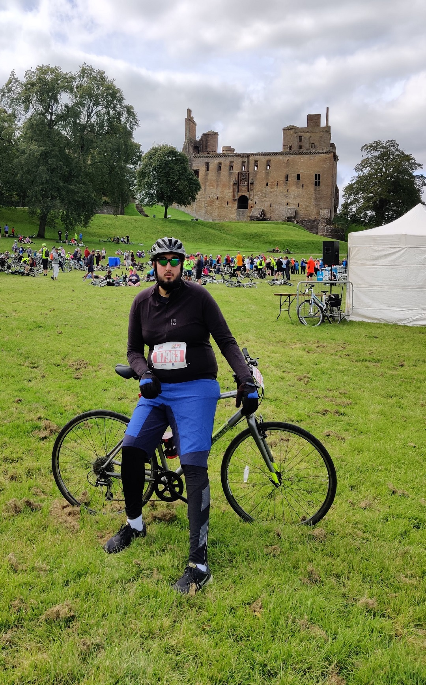

Pedal for Scotland 2019
Glasgow to Edinburgh
Distance: 42.45 mi
Time: 2:47:51
Date: 09-08-2019
Last Pedal for scotland
More informationPedal for Scotland 2015
Glasgow to Edinburgh
Distance: 55.85mi
Time: 4:32:02
Date: 06-08-2015
last Pedal for scotland to BT Murrayfield Stadium
More InformationFalkirk Wheel + The Kelpies
Glasgow to Falkirk Wheel then The Kelpies
Distance: 27.47 mi
Time: 3:32:32
Date: 09-08-2019
...
Millport
Millport
Distance: 10.64 mi
Time: 1:02:20
Date: 29-04-2018
With StepUp Scotland